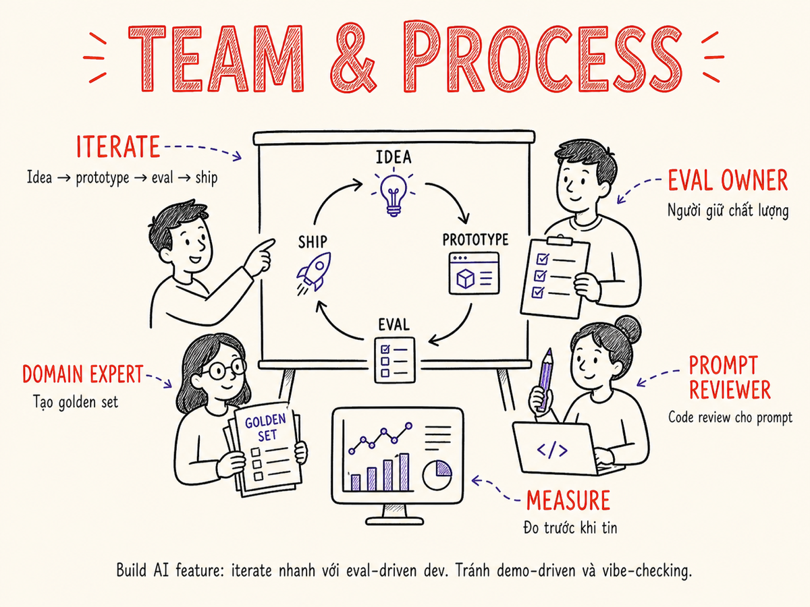

Team & Process
Build sản phẩm AI không chỉ là kỹ thuật — tổ chức team, collaboration với PM và domain experts, iteration loop, và tránh các pitfall tổ chức phổ biến.

21.1 AI Engineer trong Tổ Chức
Không có cấu trúc tổ chức "đúng" duy nhất cho AI engineering. Ba model phổ biến, mỗi cái phù hợp với quy mô và giai đoạn khác nhau:
21.2 Skills Matrix
AI Engineer cần kết hợp nhiều skill domains. Không ai giỏi tất cả — mục tiêu là có T-shaped profile: rộng đủ để hiểu toàn bộ stack, sâu ở 1–2 area.
| Domain | Competencies | Mức cần thiết |
|---|---|---|
| Software Engineering | API design, system design, testing, version control, CI/CD | Cao — nền tảng |
| Prompt Engineering | Chain-of-thought, few-shot, structured output, tool use, system design | Cao — core skill |
| ML Literacy | Hiểu tokenization, embeddings, attention, fine-tuning khái niệm | Vừa — đủ để communicate |
| Evaluation | Design eval sets, metrics, LLM-as-judge, A/B testing | Cao — differentiator |
| Product Sense | User empathy, scoping, đặt câu hỏi đúng về what to build | Vừa — thường thiếu |
| Data Engineering | ETL, data pipelines, vector stores, dataset management | Vừa — for RAG/fine-tune |
| Infra / DevOps | Containers, deployment, monitoring, cost management | Cơ bản — không cần chuyên sâu |
| Domain Knowledge | Hiểu đủ business domain để judge output quality | Context-dependent |
Nhiều AI Engineers giỏi build nhưng yếu ở evaluation. Thực ra, khả năng thiết kế eval tốt là skill quan trọng nhất để build AI products bền vững — nó cho phép bạn biết liệu thay đổi có thực sự cải thiện hay không.
21.3 Collaboration với PM, Designer, Domain Expert, Researcher
AI features nằm ở giao điểm của nhiều stakeholders. Hiểu cách mỗi người contribute giúp team work hiệu quả hơn.
Với Product Manager
- PM define what success looks like — AI Engineer translate sang eval metrics
- Phải set expectation về non-determinism: "AI không phải button, không phải lúc nào cũng cho kết quả giống nhau"
- Làm việc cùng nhau để xác định đâu là MVP eval criteria — không cần perfect, cần đủ tốt để ship
- PM cần hiểu về confidence và error modes để plan UX cho failure cases
Với Designer
- AI output có thể dài, ngắn, hoặc format khác nhau — design cần flexible
- Design error states và fallbacks rõ ràng: khi AI fail hoặc uncertain
- Streaming response UX: loading states, partial renders, cancel functionality
- Human-in-the-loop touchpoints: review, approve, edit AI output
Với Domain Expert
- Domain experts là nguồn eval data tốt nhất — họ biết output đúng/sai
- Involve họ sớm để build golden eval set
- Họ thường không biết gì về AI — explain trade-offs bằng ngôn ngữ của họ
- Khi model sai theo cách mà chỉ domain expert biết, đó là signal cần improve
Với ML Researcher
- Researcher cung cấp insight về model capabilities và limitations
- AI Engineer translate research findings thành production-ready implementations
- Friction thường ở timeline: research → engineering → product có thể mất 6–18 tháng
- Establish shared vocabulary về metrics (researcher nói "perplexity", product nói "user satisfaction")
21.4 Iteration Loop cho AI Features
Loop này nhanh hơn nhiều so với traditional software development vì:
- Prototype có thể xong trong vài giờ (thử prompt, chạy eval set nhỏ)
- Iteration chủ yếu ở prompt level, không cần rebuild infrastructure
- Ship canary sớm giúp collect real data thay vì chỉ guess
Sự khác biệt so với traditional software loop
| Điểm | Traditional SW | AI Features |
|---|---|---|
| Time to prototype | Ngày đến tuần | Giờ đến ngày |
| Primary iteration artifact | Code | Prompts + eval sets |
| Testing method | Unit/integration tests | Evals (pass rate, quality score) |
| Definition of done | Tests pass | Eval pass + user feedback positive |
| Regression risk | Code change | Code change + model update + prompt change |
21.5 Eval-Driven Development như Team Practice
Eval-driven development (EDD) là khi cả team đồng ý rằng: không có eval, không có ship. Giống TDD nhưng dành cho AI. Nhưng quan trọng hơn TDD ở chỗ: với non-deterministic systems, không thể chỉ dựa vào unit tests — eval là cách duy nhất để biết system hoạt động đúng.
Team practices để duy trì EDD
- Eval set là shared artifact: Mọi người đều có thể review, add, remove test cases
- "Add to golden set" khi fix bug: Khi fix một failure mode, thêm nó vào eval set để không tái phát
- Eval results trong PR description: "Before: 82%, After: 91%" → reviewers thấy impact ngay
- Weekly eval review: 30 phút/tuần để review recent failures và discuss patterns
- Eval ownership: Ai chịu trách nhiệm maintain eval set, add cases mới từ production feedback
21.6 Documentation
AI features có nhiều dimension cần document hơn traditional software. Thiếu documentation dẫn đến "ai cũng biết system hoạt động nhưng không ai biết tại sao" — đặc biệt nguy hiểm khi team member change.
Prompt documentation
- Intent: Prompt này làm gì, cho use case nào
- Design decisions: Tại sao chọn cách này, không phải cách kia
- Known limitations: Loại input nào không xử lý tốt
- Changelog: Đã thay đổi gì, khi nào, tại sao
Decision logs
Khi team đưa ra quyết định quan trọng (chọn model X thay Y, dùng RAG thay vì fine-tune, set threshold ở Z%), ghi lại: context, options đã xem xét, quyết định, và lý do. Format đơn giản nhất là YYYMMDD + decision name + ADR (Architecture Decision Record).
Model cards (cho fine-tuned models)
Mỗi fine-tuned model cần model card: training data source và size, intended use, known biases, evaluation results, người chịu trách nhiệm, và khi nào cần retrain.
Eval set documentation
Cho mỗi eval set: từ đâu cases được tạo ra (synthetic, production, expert-curated), distribution của input types, grading criteria, và expected baseline scores.
21.7 On-Call Considerations cho LLM Features
LLM features tạo ra loại incidents khác so với traditional software:
Quality degradation: Không phải "error" theo nghĩa truyền thống — system vẫn hoạt động nhưng output chất lượng thấp. Cần quality monitoring, không chỉ uptime monitoring. Model version change từ provider: Provider tự động upgrade model minor version, behavior thay đổi. Context pollution: Trong agentic systems, một bước fail có thể corrupt context cho các bước sau.
On-call checklist
- Biết cách toggle feature flag để disable LLM feature nhanh
- Biết cách switch sang previous prompt version
- Hiểu dashboard: latency, error rate, quality score, cost
- Có runbook cho các scenarios phổ biến: provider outage, quality regression, cost spike
- Biết escalation path khi vấn đề là ở provider side
21.8 Hiring & Growing AI Engineers
Dấu hiệu AI Engineer tiềm năng tốt
- Đã build và ship ít nhất một AI product, dù nhỏ
- Hiểu tại sao eval quan trọng — không chỉ nói về build
- Biết giới hạn của LLM: hallucination, context limits, latency
- Curious về new capabilities nhưng không hype blindly
- Strong software engineering fundamentals — AI không thay thế được
Interview signal tốt
Cho candidate một task thực tế: "Build một mini RAG system trong 2 giờ". Quan sát: họ break down bài toán thế nào? Họ thiết kế eval ra sao? Họ handle edge cases gì? Kết quả sản phẩm ít quan trọng hơn thinking process.
Growing AI Engineers trong team
- Pair programming trên real features — học nhanh hơn tutorial
- Encourage reading papers (không cần hiểu toán, đọc abstract + intro + results)
- Build internal "AI demos" không có production pressure — explore new capabilities
- Share learnings sau mỗi incident: "post-mortem cho AI failures" rất valuable
21.9 Working with Non-Determinism
Non-determinism là fundamental property của LLMs, không phải bug. Manage expectations và design systems accordingly:
Manage expectations với stakeholders
- Đừng demo với cherry-picked examples — stakeholders sẽ expect mọi case đều perfect
- Show distribution của outputs, không chỉ best case
- Frame quality bằng pass rate: "90% của trường hợp system cho output đúng theo criteria X"
- Agree upfront: what "good enough" means cho product to ship
Design cho failure gracefully
- Always có human review option — AI không phải final word
- Show confidence khi có thể: "AI không chắc về điều này"
- Fallback khi AI output low quality thay vì show garbage
- Log failures để improve — non-determinism không có nghĩa là không learn được
21.10 Common Org Pitfalls
Leadership bị cuốn vào hype, set unrealistic timeline và expectations. "Có AI rồi, sẽ giải quyết được bài toán X trong 2 tuần." Reality check: nhiều AI projects mất 3–6 tháng từ idea đến production-ready vì cần eval infrastructure, data curation, và iteration.
Build impressive demo, get approval, push to production mà không có eval infrastructure. Demo thường dùng hand-picked inputs — production có hàng trăm edge cases mà demo không cover. Kết quả: user complaints, emergency fixes, eroding trust.
Team chạy nhiều iterations nhưng không có eval → không biết mỗi iteration có cải thiện hay không. Sau 2 tháng, bạn có 20 prompt versions nhưng không biết version nào tốt nhất, và tại sao. Thiếu eval là root cause của nhiều AI project thất bại.
Viết code phụ thuộc sâu vào một provider API mà không có abstraction layer. Khi provider tăng giá, deprecate model, hoặc có outage, việc switch rất đau đớn. Solution: dùng abstraction layer (LiteLLM, OpenAI-compatible interface) và design prompt để model-agnostic.
Pitfalls nhỏ hơn nhưng phổ biến
- Over-engineering lần đầu: RAG + fine-tune + agents ngay từ đầu — start simple, add complexity khi cần
- Thiếu cost tracking cho đến khi hóa đơn gây shock
- Ignore security: prompt injection, sensitive data leak qua prompt
- Không có offline mode hoặc fallback khi provider down
- Team không đồng nhất về "done" — cần agree trên eval criteria trước khi start
Tóm tắt
- Không có org structure duy nhất đúng: Standalone, embedded, platform — chọn theo stage và quy mô.
- T-shaped skills: Rộng đủ để understand stack, sâu ở evaluation và prompt engineering.
- Collaboration đa chiều: PM define success, designer plan for failure, domain expert cung cấp eval data.
- Eval-driven development là practice cả team, không chỉ tech: không có eval, không có ship.
- Document mọi thứ: Prompts, decisions, eval sets — AI features có nhiều dimension cần document hơn traditional SW.
- Tránh 4 big pitfalls: AI hype, demo-driven dev, no eval, vendor lock-in không có kế hoạch.